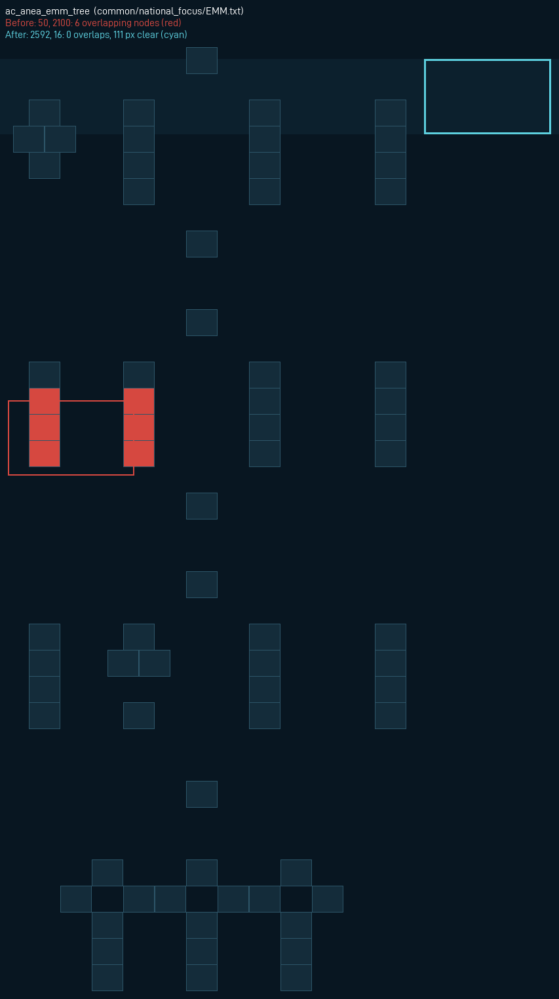
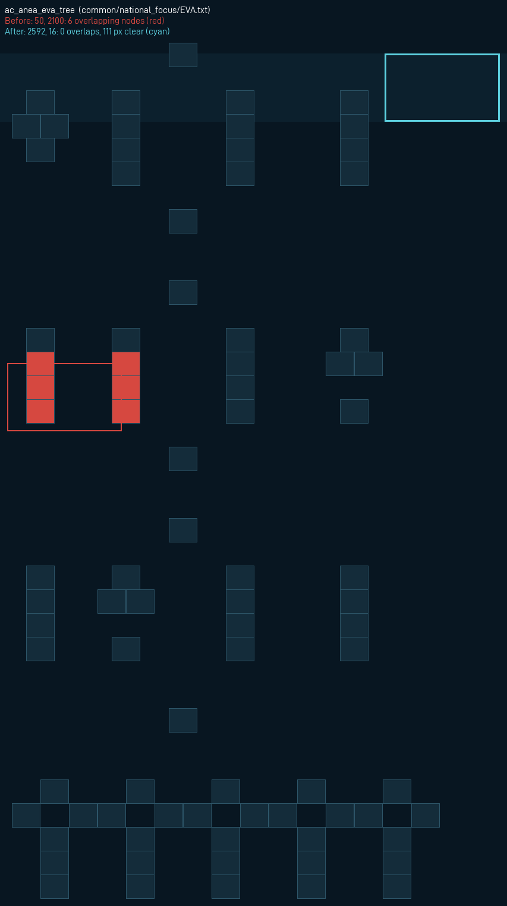
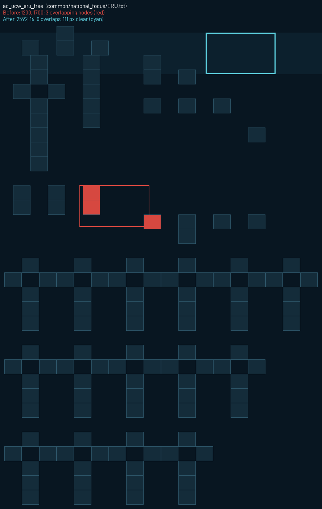
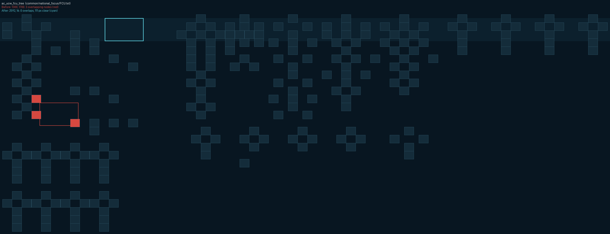
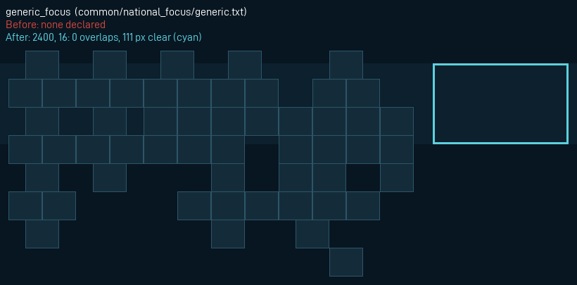

Resolved node footprints against the declared continuous_focus_position. Not native rendering evidence.
| Tree | File | Nodes | Before | Panel | Overlaps | Clearance px |
|---|---|---|---|---|---|---|
ac_anea_emm_tree | common/national_focus/EMM.txt | 108 | 50, 2100 (6 overlaps) | 2592, 16 | 0 | 111 |
ac_anea_eva_tree | common/national_focus/EVA.txt | 120 | 50, 2100 (6 overlaps) | 2592, 16 | 0 | 111 |
ac_belkan_postwar | common/national_focus/ac_belkan_campaign.txt | 63 | 1700, 100 (0 overlaps) | 1700, 100 | 0 | 755 |
ac_exp_eru_opening | common/national_focus/ERU_opening.txt | 18 | 2016, 16 (0 overlaps) | 2016, 16 | 0 | 207 |
ac_exp_fcu_opening | common/national_focus/FCU_opening.txt | 24 | 2592, 16 (0 overlaps) | 2592, 16 | 0 | 303 |
ac_regional_foundation | common/national_focus/ac_regional_foundation.txt | 36 | 2400, 16 (0 overlaps) | 2400, 16 | 0 | 303 |
ac_ucw_eru_tree | common/national_focus/ERU.txt | 150 | 1200, 1700 (3 overlaps) | 2592, 16 | 0 | 111 |
ac_ucw_fcu_tree | common/national_focus/FCU.txt | 108 | 1300, 1700 (3 overlaps) | 2592, 16 | 0 | 111 |
ac_up_amb_tree | common/national_focus/AMB.txt | 66 | 1536, 16 (0 overlaps) | 1536, 16 | 0 | 207 |
ac_up_del_tree | common/national_focus/DEL.txt | 54 | 1536, 16 (0 overlaps) | 1536, 16 | 0 | 207 |
ac_up_sns_tree | common/national_focus/SNS.txt | 78 | 1536, 16 (0 overlaps) | 1536, 16 | 0 | 207 |
ac_up_uge_tree | common/national_focus/UGE.txt | 54 | 1536, 16 (0 overlaps) | 1536, 16 | 0 | 207 |
aur_national_campaign | common/national_focus/AUR.txt | 84 | 1920, 16 (0 overlaps) | 1920, 16 | 0 | 207 |
awwnb_focus | common/national_focus/AWW.txt | 25 | 1700, 100 (0 overlaps) | 1700, 100 | 0 | 83 |
belka_belkan_war_lost | common/national_focus/BLK.txt | 32 | 1700, 100 (0 overlaps) | 1700, 100 | 0 | 563 |
belka_belkan_war_won | common/national_focus/BLK.txt | 43 | 1700, 100 (0 overlaps) | 1700, 100 | 0 | 563 |
belka_dlp_belkan_war | common/national_focus/BLK.txt | 34 | 1700, 100 (0 overlaps) | 1700, 100 | 0 | 275 |
belka_dlp_pre_war | common/national_focus/BLK.txt | 100 | 2208, 16 (0 overlaps) | 2208, 16 | 0 | 111 |
belka_start | common/national_focus/BLK.txt | 39 | 2208, 16 (0 overlaps) | 2208, 16 | 0 | 111 |
belka_wach_am_wal | common/national_focus/BLK.txt | 30 | 1700, 100 (0 overlaps) | 1700, 100 | 0 | 563 |
fat_national_campaign | common/national_focus/ac_fsb_fat.txt | 60 | 2016, 16 (0 overlaps) | 2016, 16 | 0 | 207 |
geb_pre_belkan_war_focus | common/national_focus/GEB.txt | 91 | 6048, 16 (0 overlaps) | 6048, 16 | 0 | 111 |
generic_focus | common/national_focus/generic.txt | 54 | none | 2400, 16 | 0 | 111 |
lea_national_campaign | common/national_focus/LEA.txt | 72 | 2496, 16 (0 overlaps) | 2496, 16 | 0 | 207 |
nec_national_campaign | common/national_focus/NEC.txt | 42 | 1920, 16 (0 overlaps) | 1920, 16 | 0 | 207 |
npt_pre_continental_war_focus | common/national_focus/NPT.txt | 54 | 3168, 16 (0 overlaps) | 3168, 16 | 0 | 879 |
ose_focus | common/national_focus/OSE.txt | 144 | 6500, 16 (0 overlaps) | 6500, 16 | 0 | 179 |
ose_mac_won | common/national_focus/OSE.txt | 174 | 6500, 16 (0 overlaps) | 6500, 16 | 0 | 179 |
rec_postwar_consolidation_focus | common/national_focus/REC.txt | 48 | 3168, 16 (0 overlaps) | 3168, 16 | 0 | 879 |
sap_focus | common/national_focus/SAP.txt | 120 | 7008, 16 (0 overlaps) | 7008, 16 | 0 | 111 |
sbk_civil_recovery_campaign | common/national_focus/ac_fsb_sbk.txt | 48 | 2304, 16 (0 overlaps) | 2304, 16 | 0 | 207 |
ustio_democracy | common/national_focus/UST.txt | 73 | 2500, 100 (0 overlaps) | 2500, 100 | 0 | 211 |
ustio_non_ali | common/national_focus/UST.txt | 61 | 2500, 100 (0 overlaps) | 2500, 100 | 0 | 211 |
ustio_start | common/national_focus/UST.txt | 21 | 2500, 100 (0 overlaps) | 2500, 100 | 0 | 595 |
yuk_reform_focus | common/national_focus/YUK.txt | 144 | 3168, 16 (0 overlaps) | 3168, 16 | 0 | 111 |




